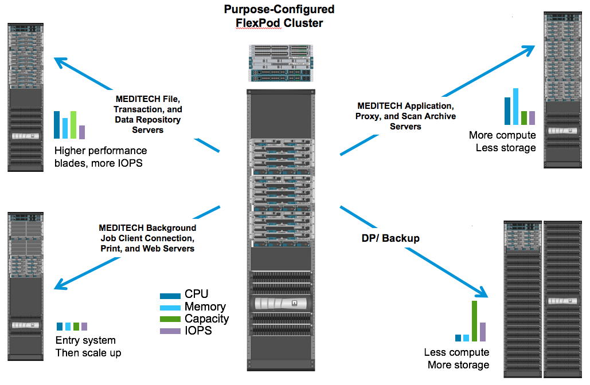

Demander de modifier un document
Demander de modifier un document Modifier sur GitHub
Modifier sur GitHub Guide des contributeurs
Guide des contributeursTr-4753 : Guide de déploiement de FlexPod Datacenter pour MEDITECH
Contributeurs
Brandon Agee et John Duignan, NetApp Mike Brennan et Jon Ebmeier, Cisco
En partenariat avec :
Avantages globaux de la solution
En exécutant un environnement MEDITECH sur le socle architectural de FlexPod, votre organisme de santé peut s’attendre à une amélioration de la productivité du personnel et une réduction des dépenses d’investissement et d’exploitation. FlexPod Datacenter pour MEDITECH offre plusieurs avantages et caractéristiques spécifiques au secteur de la santé :
-
Opérations simplifiées et coûts réduits. éliminez les dépenses et la complexité des plates-formes existantes en les remplaçant par une ressource partagée plus efficace et évolutive qui peut aider les cliniciens où qu’ils soient. Profitez également d’une utilisation améliorée des ressources et d’un meilleur retour sur investissement.
-
Déploiement plus rapide de l’infrastructure. Qu’il s’agisse d’un centre de données existant ou d’un emplacement distant, avec la conception intégrée et testée de FlexPod Datacenter, votre nouvelle infrastructure peut être opérationnelle plus rapidement et sans effort.
-
Stockage certifié. le logiciel de gestion des données NetApp ONTAP avec MEDITECH offre une fiabilité exceptionnelle et un fournisseur de stockage testé et certifié. MEDITECH ne certifie pas d’autres composants d’infrastructure.
-
Évolutivité horizontale. évolution des systèmes SAN et NAS de téraoctets (To) à des dizaines de pétaoctets (po) sans reconfigurer les applications en cours d’exécution.
-
* Continuité de l’activité.* effectuez la maintenance du stockage, les opérations de renouvellement du matériel et les mises à niveau FlexPod sans interrompre l’activité.
-
Colocation sécurisée. prendre en charge les besoins accrus de l’infrastructure partagée de stockage et de serveur virtualisé, ce qui permet une colocation sécurisée des informations spécifiques à votre installation, particulièrement si votre système héberge plusieurs instances de bases de données et de logiciels.
-
Optimisation des ressources regroupées. aide à réduire le nombre de contrôleurs de stockage et de serveurs physiques, équilibrer la charge de travail et optimiser l’utilisation tout en améliorant les performances.
-
Qualité de service (QoS). FlexPod offre la qualité de service sur l’ensemble de la pile. Les meilleures règles de qualité de service du réseau, du calcul et du stockage du secteur garantissent des niveaux de service différenciés dans un environnement partagé. Ces règles permettent d’obtenir des performances optimales pour les charges de travail et d’isoler et de contrôler les applications non contrôlées.
-
Efficacité du stockage. réduisez les coûts de stockage avec "La garantie d’efficacité du stockage NetApp 7:1".
-
Agile. grâce aux outils de gestion, d’orchestration et d’automatisation de flux de travail les plus performants du secteur fournis par les systèmes FlexPod, votre équipe INFORMATIQUE peut être beaucoup plus réactive aux demandes de l’entreprise. Allant de la sauvegarde MEDITECH au provisionnement d’environnements de test et de formation et aux réplications de bases de données d’analytique pour les initiatives de gestion de la santé des populations.
-
* Productivité accrue.* déployez et faites évoluer rapidement cette solution pour des expériences cliniques optimales pour les utilisateurs finaux.
-
NetApp Data Fabric.* l’architecture NetApp Data Fabric offre un maillage sur l’ensemble des sites, des emplacements physiques et des applications, NetApp Data Fabric est conçu pour un monde centré sur la donnée. Les données étant créées et exploitées dans divers emplacements, et souvent, vous devez les exploiter et les partager avec d’autres sites, applications et infrastructures. Vous devez disposer d’un moyen de gérer des données cohérent et intégré. Data Fabric est une méthode de gestion qui aide À maîtriser ET à simplifier une INFRASTRUCTURE IT toujours plus complexe.
FlexPod
Nouvelle approche d’infrastructure pour les DME MEDITECH
Les organismes de soins de santé comme la vôtre sont confrontés à une pression considérable pour optimiser les avantages offerts par les investissements conséquents qu’apporte les dossiers médicaux électroniques MEDITECH de pointe. Lorsque les clients conçoivent leurs data centers pour les solutions MEDITECH, ils identifient souvent les objectifs et l’architecture de leur data Center :
-
Haute disponibilité des applications MEDITECH
-
Hautes performances
-
Il est facile d’implémenter MEDITECH dans le data Center
-
Agilité et évolutivité pour accompagner la croissance des nouvelles applications ou versions MEDITECH
-
Aspect économique
-
Alignement avec les recommandations du MEDITECH et les plateformes cibles
-
Facilité de gestion, stabilité et support
-
Protection robuste des données, sauvegarde, restauration et continuité de l’activité
Les utilisateurs MEDITECH transforment les entreprises et s’adaptent aux modèles de remboursement et aux modèles réduits. Le défi est de fournir l’infrastructure MEDITECH requise dans un modèle de prestation IT plus efficace et plus agile.
Valeur d’une infrastructure convergée prévalidée
Parce qu’il est une exigence fondamentale pour fournir des performances prévisibles et une haute disponibilité des systèmes à faible latence, MEDITECH est prescriptive dans les exigences matérielles de ses clients.
FlexPod est une infrastructure convergée prévalidée et rigoureusement testée par le partenariat stratégique de Cisco et de NetApp. Il est conçu spécialement pour fournir des performances prévisibles avec une faible latence du système et une haute disponibilité. Cette approche donne lieu à la conformité MEDITECH et au délai de réponse optimal pour les utilisateurs du système MEDITECH.
La solution FlexPod de Cisco et NetApp répond aux exigences des systèmes MEDITECH grâce aux services et aux technologies haute performance, modulaires, prévalidées, convergées et virtualisées. plateforme efficace, évolutive et économique. Il offre les avantages suivants :
-
Architecture modulaire. FlexPod répond aux besoins variés de l’architecture modulaire MEDITECH avec des plateformes FlexPod spécialement configurées pour chaque charge de travail spécifique. Tous les composants sont connectés via un serveur en cluster, une structure de gestion du stockage et un ensemble d’outils de gestion cohésif.
-
Les technologies de pointe à chaque niveau de la pile convergée. Cisco, NetApp, VMware et Microsoft Windows sont toutes les entreprises classées en première ou 2e position par analystes du secteur dans leurs catégories respectives de serveurs, de réseaux, de stockage et de systèmes d’exploitation.
-
* Protection de l’investissement avec UNE INFRASTRUCTURE IT flexible et standardisée* l’architecture de référence FlexPod anticipe les nouvelles versions et mises à jour de produit, avec des tests d’interopérabilité rigoureux en cours pour tenir compte des technologies futures dès qu’elles sont disponibles.
-
Déploiement éprouvé pour une large gamme d’environnements. solution prétestée et validée avec les principaux hyperviseurs, systèmes d’exploitation, applications et logiciels d’infrastructure, FlexPod a été installé dans plusieurs entreprises clientes MEDITECH.
Architecture FlexPod éprouvée et support coopératif
FlexPod est une solution de data Center éprouvée. Grâce à son infrastructure partagée flexible, elle évolue facilement pour prendre en charge les besoins croissants des charges de travail sans compromettre la performance. En exploitant l’architecture FlexPod, cette solution permet de bénéficier de tous les avantages de FlexPod, notamment :
-
Performances pour répondre aux exigences de la charge de travail MEDITECH selon les exigences de votre proposition de configuration matérielle MEDITECH, différentes plateformes ONTAP peuvent être déployées pour répondre à vos besoins en E/S et en latence.
-
Évolutivité permettant de faire face facilement à la croissance des données cliniques évolution dynamique des machines virtuelles, des serveurs et de la capacité de stockage à la demande, sans limites traditionnelles.
-
Efficacité améliorée. réduire à la fois le temps d’administration et le coût total de possession grâce à une infrastructure virtualisée convergée, qui est plus facile à gérer et qui stocke les données plus efficacement tout en augmentant les performances du logiciel MEDITECH.
-
Réduction des risques. minimiser les interruptions d’activité grâce à une plateforme prévalidée basée sur une architecture définie qui élimine les approximations de déploiement et permet l’optimisation continue de la charge de travail.
-
Support coopératif FlexPod. NetApp et Cisco ont mis en place un modèle de support coopératif, solide, évolutif et flexible, pour répondre aux exigences de support uniques de l’infrastructure convergée FlexPod. Ce modèle tire parti de l’expérience, des ressources et de l’expertise de NetApp et de Cisco pour simplifier l’identification et la résolution de votre problème dans le cadre du support FlexPod, et ce, quelle que soit l’origine du problème. Grâce au modèle de support coopératif FlexPod, votre système FlexPod fonctionne efficacement et bénéficie des toutes dernières technologies, et vous travaillez avec une équipe expérimentée pour résoudre les problèmes d’intégration.
Le support coopératif FlexPod est essentiel pour les organismes de santé qui exécutent des applications stratégiques, telles que MEDITECH sur l’infrastructure convergée FlexPod. La figure suivante illustre le modèle de support coopératif FlexPod.

Outre ces avantages, chaque composant de la pile FlexPod Datacenter avec MEDITECH offre des avantages spécifiques aux workflows EHR.
Cisco Unified Computing System
Un système intégrant automatiquement et autonome, Cisco Unified Computing System (Cisco UCS) se compose d’un domaine de gestion unique interconnecté à une infrastructure d’E/S unifiée. Pour que l’infrastructure puisse fournir des informations stratégiques aux patients et offrir une disponibilité maximale, Cisco UCS pour les environnements MEDITECH a été aligné avec les recommandations d’infrastructure et les meilleures pratiques du secteur.
Les fondations de l’architecture MEDITECH sur Cisco UCS sont la technologie Cisco UCS et la gestion des systèmes intégrée, les processeurs Intel Xeon et la virtualisation des serveurs. Ces technologies intégrées répondent aux défis des data centers et vous aident à les atteindre pour le design des data centers MEDITECH. Cisco UCS unifie la gestion des réseaux LAN, SAN et systèmes dans une seule liaison simplifiée pour les serveurs rack, les serveurs lames et les VM. Cisco UCS est une architecture d’E/S de bout en bout qui intègre la structure unifiée Cisco et la technologie FEX (Fabric Extender) pour connecter tous les composants du système Cisco UCS à l’aide d’une structure réseau unique et d’une couche réseau unique.
Le système peut être déployé en tant qu’unité logique unique ou multiple pour les intégrer et les faire évoluer au sein de plusieurs châssis lames, serveurs en rack, racks et data centers. Le système met en œuvre une architecture radicalement simplifiée qui élimine les multiples périphériques redondants qui peuplent les châssis et les serveurs rack traditionnels des serveurs lame. Dans les systèmes traditionnels, les périphériques redondants, tels que les adaptateurs Ethernet et FC, ainsi que les modules de gestion de châssis, se traduit par plusieurs couches de complexité. Cisco UCS comprend une paire redondante de Cisco UCS Fabric Interconnect (fournis) qui offre un point de gestion unique et un point de contrôle unique pour l’ensemble du trafic d’E/S.
Cisco UCS utilise des profils de service pour s’assurer que les serveurs virtuels de l’infrastructure Cisco UCS sont correctement configurés. Les profils de service sont composés de règles de réseau, de stockage et de calcul qui sont créées une fois par des experts techniques dans chaque discipline. Les profils de service incluent des informations stratégiques sur l’identité du serveur telles que l’adressage LAN et SAN, les configurations d’E/S, les versions de micrologiciel, l’ordre de démarrage, le réseau local virtuel (VLAN), le port physique et les stratégies de qualité de service. Il est possible de créer et d’associer des profils de service de façon dynamique avec n’importe quel serveur physique du système en quelques minutes, et non plus en plusieurs heures ou jours. L’association des profils de service avec des serveurs physiques se fait sous forme d’une opération simple et unique, qui permet la migration d’identités entre les serveurs de l’environnement sans nécessiter de modification de la configuration physique. Il facilite le provisionnement rapide sans système d’exploitation de remplacements des serveurs obsolètes.
L’utilisation de profils de service permet de s’assurer que les serveurs sont configurés de manière cohérente dans toute l’entreprise. Lorsque plusieurs domaines de gestion Cisco UCS sont utilisés, Cisco UCS Central peut utiliser des profils de services globaux pour synchroniser les informations de configuration et de stratégie entre les domaines. Si la maintenance doit être effectuée dans un domaine, l’infrastructure virtuelle peut être migrée vers un autre domaine. Cette approche permet de garantir que même lorsqu’un seul domaine est hors ligne, les applications continuent à fonctionner avec une haute disponibilité.
Pour démontrer qu’il répond aux exigences de configuration des serveurs, Cisco UCS a été énormément testé avec MEDITECH sur une période de plusieurs années. Cisco UCS est une plateforme de serveur prise en charge, répertoriée sur le site de support du système de ressources produit MEDITECH.
La mise en réseau Cisco
Les commutateurs Cisco Nexus et les directeurs multicouches Cisco MDS offrent une connectivité haute performance et une consolidation SAN. Les réseaux de stockage multiprotocoles Cisco réduisent les risques en offrant flexibilité et options : FC, Fibre Connection (FICON), FC over Ethernet (FCoE), SCSI over IP (iSCSI) et FC over IP (FCIP).
Les commutateurs Cisco Nexus offrent l’un des ensembles de fonctionnalités réseau de data centers les plus complets au sein d’une plateforme unique. Elles offrent de hautes performances et une densité élevée aussi bien pour les cœurs des data centers que des campus. Ils offrent également un ensemble complet de fonctionnalités pour les déploiements d’agrégation de data Center, de bout en bout et d’interconnexion de data Center dans une plateforme modulaire extrêmement résiliente.
Cisco UCS intègre des ressources de calcul autour de commutateurs Cisco Nexus et une structure d’E/S unifiée qui identifie et gère différents types de trafic réseau. Ce trafic inclut les E/S du stockage, le trafic des postes de travail en continu, la gestion et l’accès aux applications cliniques et professionnelles. Avantages :
-
Évolutivité de l’infrastructure. virtualisation, alimentation et refroidissement efficaces, évolutivité du cloud avec automatisation, haute densité et hautes performances, tous ces éléments prennent en charge la croissance efficace du data Center.
-
Continuité opérationnelle. la conception intègre le matériel, les fonctionnalités logicielles NX-OS et la gestion pour prendre en charge les environnements sans temps d’indisponibilité.
-
QoS des réseaux et des ordinateurs. Cisco fournit une classe de service (CoS) et une qualité de service basées sur des stratégies sur le réseau, le stockage et le calcul pour des performances optimales des applications stratégiques.
-
* Flexibilité des transports.* adopter progressivement de nouvelles technologies de mise en réseau avec une solution économique.
Ensemble, Cisco UCS avec des switchs Cisco Nexus et des directeurs multicouches Cisco MDS offre une solution optimale de connectivité réseau, de calcul et SAN pour MEDITECH.
NetApp ONTAP
Le stockage NetApp qui exécute le logiciel ONTAP réduit vos coûts de stockage globaux, tout en offrant les temps de réponse en lecture et écriture à faible latence et les IOPS nécessaires aux charges de travail MEDITECH. ONTAP prend en charge à la fois les configurations 100 % Flash et hybrides pour créer une plateforme de stockage optimale qui répond aux exigences du MEDITECH. Les systèmes NetApp à accélération Flash ont reçu la validation et la certification MEDITECH : il vous offre, en tant que client MEDITECH, les performances et la réactivité qui sont essentielles aux opérations MEDITECH sensibles à la latence. La création de plusieurs domaines de défaillance dans un seul cluster permet aux systèmes NetApp d’isoler les environnements de production hors production. Les systèmes NetApp permettent également de réduire les problèmes de performance avec un niveau minimal de performance garantie pour les charges de travail avec la QoS ONTAP.
L’architecture scale-out du logiciel ONTAP s’adapte en toute flexibilité à diverses charges de travail d’E/S. Les architectures ONTAP permettent généralement d’atteindre le débit et la faible latence nécessaires aux applications cliniques tout en proposant une architecture scale-out modulaire. Les nœuds NetApp AFF peuvent être associés dans le même cluster scale-out avec des nœuds de stockage hybride (HDD et Flash) qui sont adaptés au stockage de datasets volumineux à haut débit. Outre une solution de sauvegarde approuvée par MEDITECH, vous pouvez cloner, répliquer et sauvegarder votre environnement MEDITECH depuis un système de stockage SSD (Solid-State Drive) coûteux et le stockage HDD plus économique sur d’autres nœuds. Cette approche rencontre, voire dépasse, les directives MEDITECH pour le clonage et la sauvegarde des pools de production basés sur le SAN.
De nombreuses fonctionnalités ONTAP sont particulièrement utiles pour les environnements MEDITECH : simplification de la gestion, amélioration de la disponibilité et de l’automatisation et réduction du volume total de stockage requis. Avantages de ces fonctionnalités :
-
Performances exceptionnelles. la solution NetApp AFF partage l’architecture de stockage unifié, le logiciel ONTAP, l’interface de gestion, les services de données complets et les fonctionnalités avancées des autres gammes de produits FAS de NetApp. Cette association innovante des supports 100 % Flash avec les systèmes ONTAP offre la faible latence prévisible et les IOPS élevées des systèmes de stockage 100 % Flash, associées à la qualité de logiciel ONTAP optimale.
-
Efficacité du stockage. réduisez les besoins en capacité totale grâce à la déduplication, à la technologie de réplication des données NetApp FlexClone, à la compression à la volée, à la compaction, à la réplication fine, au provisionnement fin et déduplication dans l’agrégat.
La déduplication NetApp offre une déduplication au niveau des blocs dans un volume NetApp FlexVol ou dans un composant de données. La déduplication supprime les blocs dupliqués pour ne stocker que les blocs uniques du volume FlexVol ou du composant de données.
La déduplication fonctionne avec un niveau de granularité élevé et s’exécute sur le système de fichier actif du volume FlexVol ou du composant de données. La déduplication est transparente pour les applications. Vous pouvez donc l’utiliser pour dédupliquer des données provenant de toute application qui utilise le système NetApp. Vous pouvez exécuter la déduplication des volumes comme processus à la volée (depuis la version ONTAP 8.3.2). Vous pouvez également l’exécuter en arrière-plan sous la forme d’un processus que vous pouvez configurer pour s’exécuter automatiquement, de manière à être planifiée ou manuellement via l’interface de ligne de commande, NetApp ONTAP System Manager ou NetApp Active IQ Unified Manager.
La figure suivante illustre le fonctionnement optimal de la déduplication NetApp.

-
Clonage compact. la fonctionnalité FlexClone vous permet de créer presque instantanément des clones pour prendre en charge l’actualisation de l’environnement de sauvegarde et de test. Ces clones consomment davantage d’espace de stockage uniquement lorsque des modifications sont apportées.
-
Technologies NetApp Snapshot et SnapMirror. ONTAP peut créer des copies Snapshot compactes des LUN (Logical Unit Numbers) utilisées par l’hôte MEDITECH. Dans le cas de déploiements sur deux sites, vous pouvez implémenter le logiciel SnapMirror pour améliorer la réplication des données et la résilience.
-
Protection intégrée des données. les fonctionnalités de protection complète des données et de reprise après incident vous aident à protéger les données stratégiques et à assurer une reprise après incident.
-
Continuité de l’activité. vous pouvez effectuer des mises à niveau et des opérations de maintenance sans mettre les données hors ligne.
-
QoS et QoS adaptative (AQoS). la qualité de service du stockage vous permet de limiter les charges de travail dominantes potentielles. Plus important encore, la QoS peut garantir des performances minimales pour les charges de travail stratégiques telles que la production MEDITECH. En limitant les conflits, la qualité de services NetApp peut réduire les problèmes de performance. AQoS fonctionne avec des groupes de règles prédéfinis que vous pouvez appliquer directement à un volume. Ces groupes de règles peuvent automatiquement adapter une taille maximale ou au sol par volume, ce qui conserve un rapport d’IOPS de quelques téraoctets et de plusieurs gigaoctets en fonction de la taille du volume modifié.
-
NetApp Data Fabric. NetApp Data Fabric simplifie et intègre la gestion des données dans les environnements cloud et sur site afin d’accélérer la transformation digitale. Elles offrent des services et des applications de gestion de données intégrés et cohérents pour la visibilité, l’exploitation, l’accès, le contrôle ainsi que la protection et la sécurité, NetApp est intégré avec Amazon Web Services (AWS), Azure, Google Cloud Platform et les clouds IBM Cloud pour vous offrir un large choix.
La figure suivante illustre l’architecture FlexPod pour les charges de travail MEDITECH.

Présentation DE MEDITECH
Medical information Technology, Inc., communément appelé MEDITECH, est une entreprise de logiciel basée au Massachusetts qui fournit des systèmes d’information aux organismes de santé. MEDITECH fournit un système de DME conçu pour stocker et organiser les dernières données patient et fournir les données au personnel clinique. Les données patient comprennent, sans s’y limiter, les données démographiques; les antécédents médicaux; les médicaments; les résultats des tests de laboratoire; images de radiologie ; et informations personnelles telles que l’âge, la taille et le poids.
Il va au-delà du périmètre de ce document et couvre l’éventail étendu des fonctions prises en charge par le logiciel MEDITECH. L’annexe A fournit plus d’informations sur ces vastes ensembles de fonctions MEDITECH. Les applications MEDITECH nécessitent plusieurs machines virtuelles pour prendre en charge ces fonctions. Pour déployer ces applications, consultez les recommandations du MEDITECH.
Pour chaque déploiement, du point de vue des systèmes de stockage, tous les systèmes logiciels MEDITECH nécessitent une base de données distribuée axée sur les patients. MEDITECH possède sa propre base de données propriétaire, qui utilise le système d’exploitation Windows.
Bridgehead et CommVault sont les deux applications logicielles de sauvegarde certifiées par NetApp et MEDITECH. Ce document ne couvre pas le déploiement de ces applications de sauvegarde.
L’objectif principal de ce document est de permettre à la pile FlexPod (serveurs et stockage) de répondre aux exigences de performances de la base de données MEDITECH et aux exigences de sauvegarde dans l’environnement EHR.
Conçu spécialement pour les charges de travail MEDITECH spécifiques
MEDITECH ne revende pas de matériel de serveur, de réseau ou de stockage, d’hyperviseurs ou de systèmes d’exploitation mais elle a des exigences spécifiques pour chaque composant de la pile d’infrastructure. C’est pourquoi Cisco et NetApp ont travaillé ensemble pour tester et permettre à FlexPod Datacenter d’être configuré, déployé et pris en charge pour répondre aux besoins de l’environnement de production MEDITECH des clients tels que vous.
Catégories MEDITECH
MEDITECH associe la taille du déploiement à un numéro de catégorie compris entre 1 et 6. La catégorie 1 représente les plus petits déploiements MEDITECH, et la catégorie 6 représente les plus grands déploiements MEDITECH.
Pour plus d’informations sur les caractéristiques d’E/S et les besoins en performances d’un hôte MEDITECH dans chaque catégorie, consultez le site NetApp "Tr-4190 : directives de dimensionnement NetApp pour les environnements MEDITECH".
Plateforme MEDITECH
La plate-forme MEDITECH expanse est la dernière version du logiciel EHR de l’entreprise. Les anciennes plateformes MEDITECH sont client/serveur 5.x et MAGIC. Cette section décrit la plateforme MEDITECH (avec étendue, 6.x, C/S 5.x et MAGIC), concernant l’hôte MEDITECH et ses besoins en stockage.
Pour toutes les plateformes MEDITECH précédentes, plusieurs serveurs exécutent le logiciel MEDITECH pour effectuer différentes tâches. La figure précédente représente un système MEDITECH standard, avec les hôtes MEDITECH qui sont utilisés en tant que serveurs de base de données applicative et d’autres serveurs MEDITECH. Les autres serveurs MEDITECH sont notamment l’application de référentiel de données, l’application d’analyse et d’archivage et les clients de travail en arrière-plan. Pour obtenir la liste complète des autres serveurs MEDITECH, reportez-vous aux documents « proposition de configuration matérielle » (pour les nouveaux déploiements) et « tâche d’évaluation matérielle » (pour les déploiements existants). Ces documents peuvent être obtenu auprès de MEDITECH par l’intégrateur système MEDITECH ou auprès de votre responsable de compte technique MEDITECH.
Hôte DE MEDITECH
Un hôte MEDITECH est un serveur de base de données. Cet hôte est également appelé serveur de fichiers MEDITECH (pour la plate-forme étendue, 6.x ou C/S 5.x) ou COMME une machine MAGIC (pour la plate-forme MAGIC). Ce document utilise l’hôte du terme MEDITECH pour faire référence au serveur de fichiers MEDITECH ou à une machine MAGIC.
LES hôtes MEDITECH peuvent être des serveurs ou des machines virtuelles physiques exécutés sur le système d’exploitation Microsoft Windows Server. Les hôtes MEDITECH sont le plus souvent déployés sur le terrain en tant que machines virtuelles Windows qui s’exécutent sur un serveur VMware ESXi. À ce jour, VMware est le seul hyperviseur pris en charge par MEDITECH. Un hôte MEDITECH stocke son programme, son dictionnaire et ses fichiers de données sur un lecteur Microsoft Windows (par exemple, le lecteur E) du système Windows.
Dans un environnement virtuel, un lecteur Windows E réside sur un LUN relié à la machine virtuelle par le biais d’un RDM (Raw Device Mapping) en mode de compatibilité physique. L’utilisation des fichiers VMDK (Virtual machine Disk) comme lecteur Windows E dans ce scénario n’est pas prise en charge par MEDITECH.
Caractéristiques en E/S de la charge de travail hôte MEDITECH
Les caractéristiques d’E/S de chaque hôte MEDITECH et du système dans son ensemble dépendent de la plateforme MEDITECH que vous déployez. Toutes les plateformes MEDITECH (étendue, 6.x, C/S 5.x et MAGIC) génèrent des workloads qui sont 100 % aléatoires.
La plateforme d’étendue MEDITECH génère le workload le plus exigeants. En effet, elle présente le plus grand pourcentage d’opérations d’écriture et d’IOPS globales par hôte, suivi par 6.x, C/S 5.x et les plateformes MAGIC.
Pour en savoir plus sur les descriptions des charges de travail MEDITECH, consultez le site "Tr-4190 : directives de dimensionnement NetApp pour les environnements MEDITECH".
Réseau de stockage
MEDITECH nécessite l’utilisation du protocole FC pour le trafic de données entre le système NetApp FAS ou AFF et les hôtes MEDITECH de toutes les catégories.
Présentation du stockage pour un hôte MEDITECH
Chaque hôte MEDITECH utilise deux disques Windows :
-
Lecteur C. ce lecteur stocke le système d’exploitation Windows Server et les fichiers d’application hôte MEDITECH.
-
Lecteur E. l’hôte MEDITECH stocke son programme, son dictionnaire et ses fichiers de données sur le lecteur E du système d’exploitation Windows Server. Le disque E est une LUN mappée à partir du système FAS ou AFF de NetApp via le protocole FC. MEDITECH nécessite l’utilisation du protocole FC afin de répondre aux exigences en termes d’IOPS et de latence de lecture et d’écriture de l’hôte MEDITECH.
nomenclature établie des volumes et des LUN
MEDITECH nécessite l’utilisation d’une convention de nommage spécifique pour toutes les LUN.
Avant de déployer tout système de stockage, vérifiez la proposition de configuration matérielle MEDITECH afin de confirmer la convention de nom des LUN. La sauvegarde MEDITECH s’appuie sur la convention de nom des volumes et des LUN pour identifier correctement les LUN à sauvegarder.
Outils de gestion et fonctionnalités d’automatisation complets
Cisco UCS et Cisco UCS Manager
Cisco s’articule autour de trois éléments clés pour offrir une infrastructure de data Center de pointe : simplification, sécurité et évolutivité. Associé à la modularité de plateforme, le logiciel Cisco UCS Manager procure une plateforme de virtualisation des postes de travail simplifiée, sécurisée et évolutive :
-
Simplifié. Cisco UCS offre une nouvelle approche radicale de l’informatique standard et fournit le cœur de l’infrastructure de centre de données pour toutes les charges de travail. Cisco UCS offre de nombreuses fonctionnalités et avantages, notamment une réduction du nombre de serveurs nécessaires et du nombre de câbles utilisés par serveur. Une autre fonctionnalité importante est la possibilité de déployer ou de reprovisionner rapidement des serveurs via des profils de service Cisco UCS. Le nombre de serveurs et de câbles à gérer, ainsi que le provisionnement rationalisé des charges de travail applicatives et de serveurs simplifient les opérations. Les profils de service Cisco UCS Manager permettent de provisionner une quantité de serveurs lames et en rack en quelques minutes. Les profils de service Cisco UCS éliminent les runbooks d’intégration de serveurs tout en éliminant les écarts de configuration. Cette approche accélère le temps consacré à la productivité des utilisateurs finaux, améliore la souplesse de l’entreprise et permet l’allocation des ressources INFORMATIQUES à d’autres tâches.
Cisco UCS Manager automatise de nombreuses opérations courantes et sujettes aux erreurs des data centers, telles que la configuration et le provisionnement de l’infrastructure d’accès au serveur, au réseau et au stockage. De plus, les serveurs lames Cisco UCS B-Series et les serveurs en rack C-Series avec un encombrement important de mémoire assurent une densité élevée pour les utilisateurs d’applications, ce qui réduit les exigences de l’infrastructure de serveurs.
La simplification conduit à un déploiement d’infrastructure MEDITECH plus rapide et efficace.
-
Secure. bien que les machines virtuelles soient intrinsèquement plus sécurisées que leurs prédécesseurs physiques, elles présentent de nouveaux défis en matière de sécurité. Les serveurs web et d’applications stratégiques qui utilisent une infrastructure commune telle que les postes de travail virtuels courent désormais un risque plus élevé de menaces de sécurité. Le trafic entre les VM représente désormais un élément de sécurité important que les responsables INFORMATIQUES doivent traiter, en particulier dans les environnements dynamiques dans lesquels les VM, via VMware vMotion, déplacent dans l’infrastructure de serveurs.
Par conséquent, la virtualisation augmente considérablement la sensibilisation au niveau des machines virtuelles aux règles et à la sécurité, notamment étant donné la nature dynamique et fluide de la mobilité des machines virtuelles au sein d’une infrastructure informatique étendue. La facilité avec laquelle les nouveaux postes de travail virtuels peuvent proliférer accroît l’importance d’une infrastructure réseau et de sécurité orientée virtualisation. L’infrastructure de data Center Cisco (Cisco UCS, Cisco MDS et gamme de solutions Cisco Nexus) pour la virtualisation des postes de travail offre une sécurité renforcée au niveau du data Center, du réseau et des postes de travail, avec une sécurité complète depuis le poste de travail vers l’hyperviseur. La segmentation des postes de travail virtuels, des stratégies et de l’administration intégrant la cohérence avec les machines virtuelles, ainsi que la sécurité réseau sur l’ensemble de l’infrastructure LAN et WAN.
-
Évolutif. la croissance des solutions de virtualisation est inévitable. Une solution doit donc être capable d’évoluer de manière prévisible avec cette croissance. Les solutions de virtualisation Cisco prennent en charge une forte densité d’ordinateurs virtuels (VM par serveur). De plus, plus le nombre de serveurs peut évoluer en s’appuyant sur des performances quasi linéaires. L’infrastructure de data Center Cisco offre une plateforme flexible pour la croissance et améliore la souplesse commerciale. Les profils de service Cisco UCS Manager permettent un provisionnement d’hôte à la demande et facilitent le déploiement de centaines d’hôtes car celui-ci doit être déployé des dizaines.
Les serveurs Cisco UCS offrent des performances et une évolutivité quasi linéaires. Cisco UCS met en œuvre la technologie de mémoire étendue brevetée Cisco, qui offre un grand format de mémoire avec moins de sockets (avec une évolutivité jusqu’à 1 To de mémoire avec des serveurs à 2 et 4 sockets). Grâce à la technologie Unified Fabric comme élément de base, la bande passante agrégée des serveurs Cisco UCS Server peut évoluer jusqu’à 80 Gbit/s par serveur. En outre, Cisco UCS Fabric Interconnect peut produire 2 Tbit/s à un taux de ligne inférieur. Cette fonctionnalité permet d’éviter les goulets d’étranglement en E/S de la virtualisation des postes de travail et la mémoire. Cisco UCS, grâce à son architecture réseau unifiée basée sur la structure hautes performances à faible latence, prend en charge des volumes importants de trafic de postes de travail virtuels, notamment le trafic vidéo et de communication haute résolution. De plus, grâce aux solutions de virtualisation FlexPod, ONTAP garantit la disponibilité des données et des performances optimales lors des « boot storms » et « login storms ».
Les conceptions d’infrastructures de data Center Cisco UCS, Cisco MDS et Cisco Nexus fournissent une excellente plateforme à plus forte croissance. Vous bénéficiez d’une évolutivité transparente des ressources de serveur, de réseau et de stockage pour prendre en charge la virtualisation des postes de travail, les applications de data Center et le cloud computing.
Serveur VMware vCenter
VMware vCenter Server constitue une plateforme centralisée pour la gestion des environnements MEDITECH : votre entreprise du secteur de la santé peut automatiser et fournir une infrastructure virtuelle en toute confiance :
-
Déploiement simple. déployez rapidement et facilement vCenter Server à l’aide d’une appliance virtuelle.
-
Contrôle et visibilité centralisés. administrer l’ensemble de l’infrastructure VMware vSphere à partir d’un emplacement unique.
-
Optimisation proactive. allouer et optimiser les ressources pour une efficacité maximale.
-
Gestion. utilisez des plug-ins et des outils puissants pour simplifier la gestion et étendre le contrôle.
Virtual Storage Console pour VMware vSphere
Virtual Storage Console (VSC), le fournisseur vSphere API for Storage Awareness (VASA) et l’appliance VMware Storage Replication adapter (SRA) pour VMware vSphere de NetApp constituent une seule appliance virtuelle. La suite de produits inclut SRA et VASA Provider comme plug-in vCenter Server, qui permet de gérer de bout en bout le cycle de vie des machines virtuelles dans les environnements VMware qui utilisent des systèmes de stockage NetApp.
L’appliance virtuelle pour VSC, VASA Provider et SRA s’intègre facilement avec le client Web VMware vSphere et vous permet d’utiliser les services SSO. Dans un environnement comportant plusieurs instances VMware vCenter Server, chaque instance vCenter Server à gérer doit disposer de sa propre instance enregistrée de VSC. La page du tableau de bord VSC vous permet de consulter rapidement l’état global de vos datastores et machines virtuelles.
Grâce au déploiement de l’appliance virtuelle pour VSC, VASA Provider et SRA, vous pouvez effectuer les tâches suivantes :
-
Utilisez VSC pour déployer et gérer le stockage et configurer l’hôte ESXi. vous pouvez utiliser VSC pour ajouter des informations d’identification, supprimer des informations d’identification, attribuer des informations d’identification et configurer des autorisations pour les contrôleurs de stockage dans votre environnement VMware. De plus, vous pouvez gérer des serveurs ESXi connectés aux systèmes de stockage NetApp. En quelques clics, vous pouvez définir les valeurs recommandées pour les délais d’expiration des hôtes, le NAS et les chemins d’accès multiples pour tous les hôtes. Vous pouvez également afficher les détails du stockage et collecter des informations de diagnostic.
-
Utilisez VASA Provider pour créer des profils de capacité de stockage et définir des alarmes. VASA Provider pour ONTAP est enregistré avec VSC lorsque vous activez l’extension VASA Provider. Vous pouvez créer et utiliser des profils de capacité de stockage et des datastores virtuels. Vous pouvez également définir des alarmes pour vous alerter lorsque les seuils des volumes et des agrégats sont presque pleins. Il est possible de surveiller les performances des VMDK et des machines virtuelles qui sont créées sur des datastores virtuels.
-
Utilisez SRA pour la reprise après sinistre. vous pouvez utiliser SRA pour configurer les sites protégés et de reprise dans votre environnement pour la reprise après sinistre en cas de panne.
NetApp OnCommand Insight et ONTAP
NetApp OnCommand Insight intègre la gestion de l’infrastructure à la chaîne de livraison des services MEDITECH. Cette approche permet à votre établissement de santé de mieux contrôler, automatiser et analyser votre infrastructure de stockage, de réseau et de calcul. Optimisez votre infrastructure actuelle afin d’en tirer le meilleur parti, tout en simplifiant les prises de décision en termes d’achat. Elle réduit également les risques associés aux migrations technologiques complexes. Aucun agent n’étant nécessaire, l’installation est simple et sans perturbation. Les périphériques de stockage et SAN sont continuellement découverts et des informations détaillées sont recueillies pour offrir une totale visibilité de l’ensemble de votre environnement de stockage. Vous pouvez identifier rapidement les actifs mal utilisés, déréglés, sous-employés ou orphelins, puis les récupérer pour alimenter l’extension future. OnCommand Insight peut vous aider à :
-
* Optimiser les ressources existantes.* identifier les actifs mal utilisés, sous-employés ou orphelins en utilisant les meilleures pratiques établies pour éviter les problèmes et respecter les niveaux de service.
-
* Prendre de meilleures décisions.* les données en temps réel permettent de résoudre plus rapidement les problèmes de capacité afin de planifier avec précision les futurs achats, d’éviter les surinvestissements et de reporter les dépenses d’investissement.
-
Accélérer les initiatives INFORMATIQUES. mieux comprendre vos environnements virtuels pour vous aider à gérer les risques, réduire les temps d’arrêt et accélérer le déploiement du cloud.